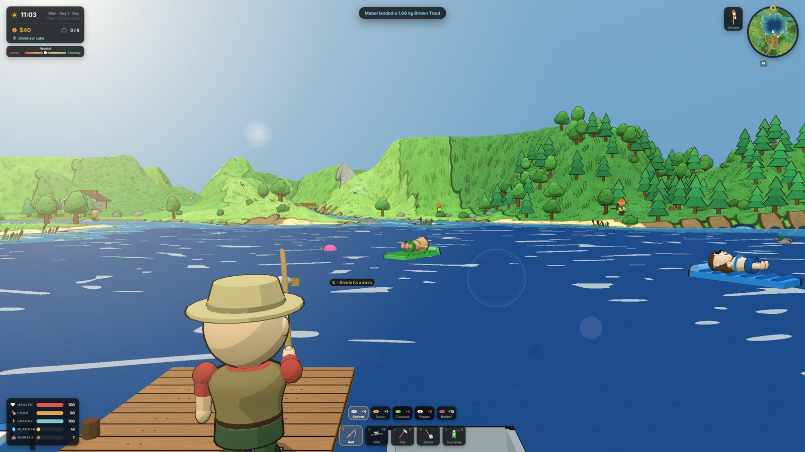
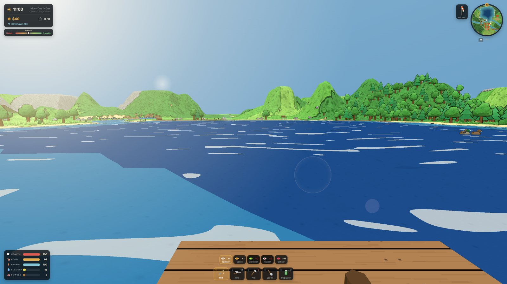
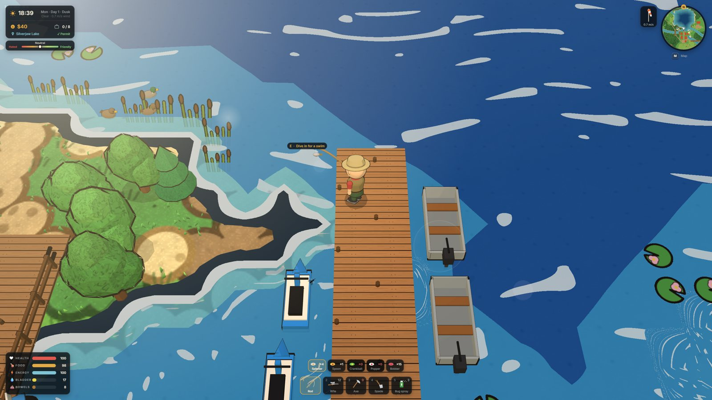
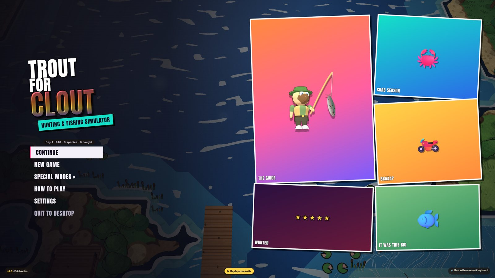

An open valley of lakes, rivers and hills. Fish it, hunt it, ride through it, and get into as much trouble as you like on the way.
⬇Download for WindowsInstaller · v2.3.1 · 119 MB



The game opens fullscreen: F11 or Alt+Enter switches to a window, and V changes the camera. Uninstall from Windows Settings → Apps. Contains nudity, drug use and violence; intended for adults.